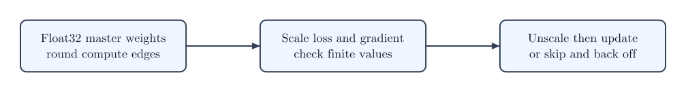
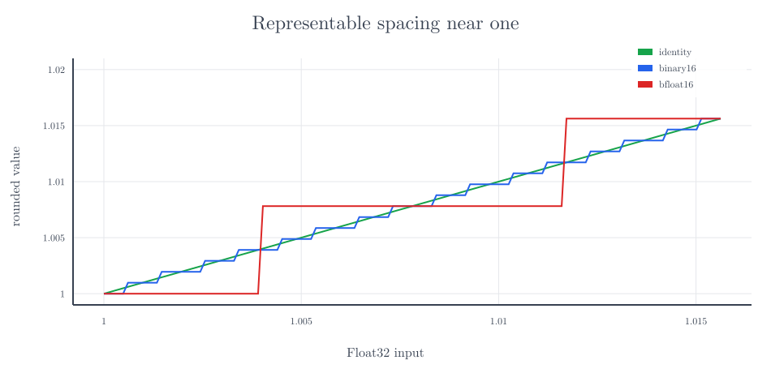
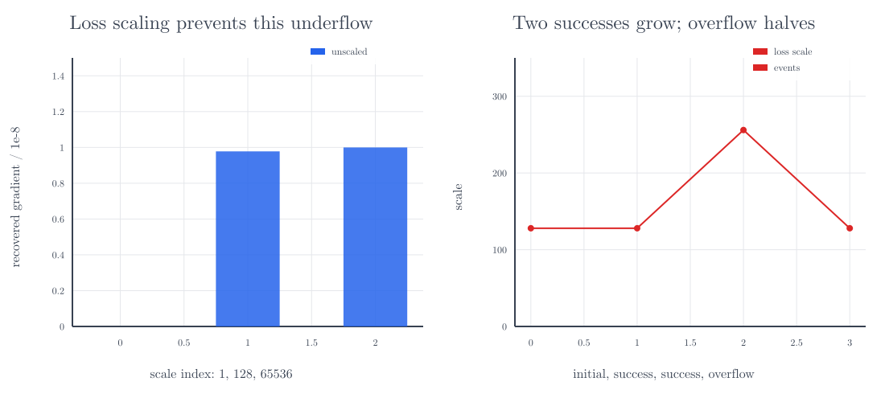
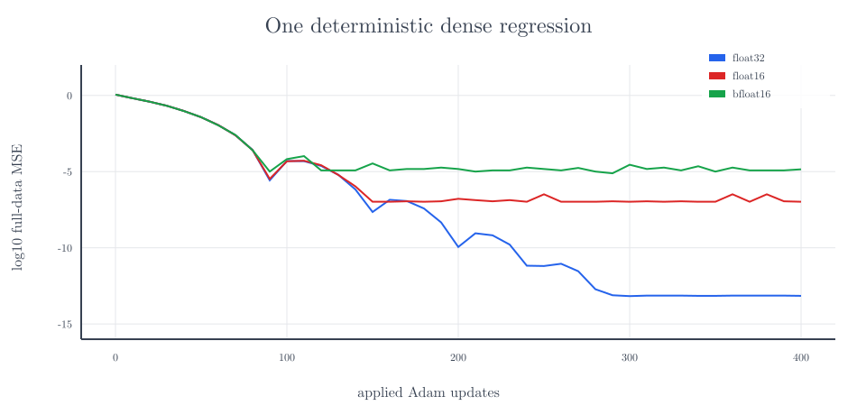
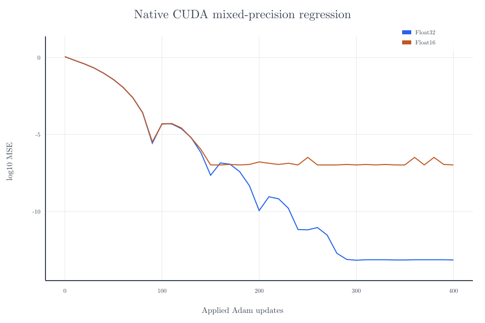

Mixed Precision: Rounding, Loss Scaling and Skipped Updates
Abstract
We round values to binary16 and bfloat16 representable sets while retaining Float32 storage and arithmetic on the CPU. Three experiments expose representational limits, recover a tiny rounded gradient through loss scaling, and compare small dense fits. A deliberately overflowing gradient checks that skipping an update preserves weights, Adam moments and its update counter. These experiments make no claim about GPU speed, native low-precision memory use, or bitwise agreement with a hardware mixed-precision kernel.
The method
Binary16 has five exponent bits and ten stored fraction bits: its smallest positive normal is 2-14, smallest positive subnormal 2-24 and largest finite value 65504. Bfloat16 keeps Float32's eight exponent bits but only seven fraction bits. Its range is wider than binary16's, while spacing near one is coarser: 2-7 versus 2-10. Rounding uses nearest with ties to even. Binary16 subnormals are retained here.
The native emulation rounds dense-layer inputs, master weights, matmul outputs, biases and bias-add outputs. The multiply/accumulate itself still uses Float32. Its custom autograd VJP rounds the incoming gradient to the selected format. This is a storage-emulation surrogate, not the derivative of piecewise-constant rounding.
For a positive loss multiplier S, the intended scaling identity is
Scaling can move small gradients into the representable range before the surrogate rounding edge. Divide into independent Float32 buffers and check finiteness before calling the optimizer. Overflow causes a skipped update and scale backoff; successful updates eventually grow the bounded scale. The host owns this control flow.
The concept diagram below is drawn by dm::graphics::Diagram. Its editable C++
source is the complete block below; regeneration uses the same datamunge toolchain
as the numerical examples. Exports consume the saved local SVG.
#include <dm/dm.hpp>
int main() {
std::filesystem::create_directories("build");
dm::graphics::Diagram diagram;
diagram.node("n0", {0.0, 0}, "Float32 master weights\nround compute edges");
diagram.node("n1", {5.5, 0}, "Scale loss and gradient\ncheck finite values");
diagram.node("n2", {11.0, 0}, "Unscale then update\nor skip and back off");
diagram.edge("n0", "n1").edge("n1", "n2");
diagram.save_svg("build/mixed_precision_concept.svg");
}
Simple examples
Range and spacing are different constraints
The table includes a tiny derivative, the subnormal boundary, a midpoint near one, and overflow. Both reduced formats have coarser spacing than Float32. Bfloat16 keeps 1e-8 nonzero; binary16 rounds it to zero. At 65520, binary16 rounds to infinity. The plot uses only the finite values near one so that infinity is never drawn as an ordinary finite point.
#include <dm/dm.hpp>
int main() {
using namespace dm::nn;
dm::dstruct::DataFrame t;
std::vector<double>
x = {1e-8, std::ldexp(1., -24), 1., 1.00048828125, 1.001, 1.00390625, 65504., 65520.},
h, b;
for (double a : x) {
h.push_back(round_float16(float(a)));
b.push_back(round_bfloat16(float(a)));
}
t.add_column("input", x);
t.add_column("binary16", h);
t.add_column("bfloat16", b);
std::vector<double> near, half, bfloat;
for (int i = 0; i <= 128; ++i) {
const float a = 1 + i / 8192.f;
near.push_back(a);
half.push_back(round_float16(a));
bfloat.push_back(round_bfloat16(a));
}
auto p = dm::graphics::RPlot::create();
p.line(near, near, "identity", {22, 163, 74})
.line(near, half, "binary16", {37, 99, 235})
.line(near, bfloat, "bfloat16", {220, 38, 38})
.title("Representable spacing near one")
.x_label("Float32 input")
.y_label("rounded value")
.y_limits(.999, 1.021);
std::filesystem::create_directories("build");
p.size(950, 460).save_svg("build/mixed_rounding.svg");
std::print("{}\n", t.to_md(9));
}| input | binary16 | bfloat16 |
|---|---|---|
| 0.000000010 | 0.000000000 | 0.00000001 |
| 0.000000060 | 0.000000060 | 0.00000006 |
| 1.000000000 | 1.000000000 | 1.00000000 |
| 1.000488281 | 1.000000000 | 1.00000000 |
| 1.001000000 | 1.000976562 | 1.00000000 |
| 1.003906250 | 1.003906250 | 1.00000000 |
| 65504.000000000 | 65504.000000000 | 65536.00000000 |
| 65520.000000000 | inf | 65536.00000000 |

Scaling crosses the rounded-gradient boundary
For L=q(w)*1e-8 at w=1, q has the explicitly rounded VJP described above. Without scaling the incoming 1e-8 gradient becomes zero in binary16. A scale of 65536 moves it into range before rounding; division afterwards recovers approximately 1e-8. Recovery remains approximate because rounding still occurs. A bounded host scale with a two-success interval grows 128 to 256 and backs off to 128 on overflow.
#include <dm/dm.hpp>
int main() {
using namespace dm::nn;
const auto w = scalar(1).requires_grad_();
dm::dstruct::DataFrame t;
std::vector<double> scales = {1, 128, 65536}, rounded, recovered;
for (double scale : scales) {
const auto loss = quantize_precision(w, PrecisionEmulation::Float16) * 1e-8;
const auto g = grad(loss * scale, {w});
std::vector<Tensor> unscaled;
if (!unscale_gradients(g, float(scale), &unscaled))
throw std::runtime_error("unexpected overflow");
rounded.push_back(g[0].item());
recovered.push_back(unscaled[0].item());
}
if (recovered.front() != 0 || std::abs(recovered.back() - 1e-8) > 1e-11)
throw std::runtime_error("scaling reference mismatch");
t.add_column("scale", scales);
t.add_column("rounded_scaled_gradient", rounded);
t.add_column("unscaled_gradient", recovered);
DynamicLossScale policy(128, 2, 1, 256);
std::vector<double> states = {policy.value()};
policy.applied();
states.push_back(policy.value());
policy.applied();
states.push_back(policy.value());
policy.overflow();
states.push_back(policy.value());
auto tiny = dm::graphics::RPlot::create(), host = dm::graphics::RPlot::create();
std::vector<double> units = recovered;
for (auto& v : units)
v /= 1e-8;
tiny.bars({0, 1, 2}, units, "unscaled", {37, 99, 235}, .5)
.title("Loss scaling prevents this underflow")
.x_label("scale index: 1, 128, 65536")
.y_label("recovered gradient / 1e-8")
.y_limits(0, 1.5);
host.line({0, 1, 2, 3}, states, "loss scale", {220, 38, 38})
.points({0, 1, 2, 3}, states, "events", {220, 38, 38}, 4)
.title("Two successes grow; overflow halves")
.x_label("initial, success, success, overflow")
.y_label("scale")
.y_limits(0, 350);
std::filesystem::create_directories("build");
dm::graphics::RLayout::create(1, 2).add(tiny).add(host).size(1100, 490).fit_panels().save_svg(
"build/mixed_scaling.svg");
std::print("{}\n\nHost scales: 128, 128, 256, 128.\n", t.to_md(12));
}| scale | rounded_scaled_gradient | unscaled_gradient |
|---|---|---|
| 1 | 0.000000000 | 0.00000000 |
| 128 | 0.000001252 | 0.00000001 |
| 65536 | 0.000655174 | 0.00000001 |
Host scales: 128, 128, 256, 128.

A small dense model
Master weights stay Float32 and overflow skips Adam
Sixteen deterministic two-feature observations follow y=.73*x0-1.27*x1+.13. All three modes start with seed 11, use Adam at rate .03 and apply 400 full-batch updates. Parameter creation happens on the first forward pass, before constructing the optimizer. Only binary16 uses dynamic scaling. After its first successful update, a separate scale of 1e12 deliberately overflows. We compare every master weight, optimizer slot and counter before and after that skipped attempt. Ordinary finite training then continues. This is one tiny deterministic regression, not a benchmark or evidence that any precision is universally accurate enough.
#include <dm/dm.hpp>
int main() {
using namespace dm::nn;
set_num_threads(2);
std::vector<float> xv(32), yv(16);
for (int i = 0; i < 16; ++i) {
float a = std::sin(i * .7f), b = std::cos(i * .4f);
xv[2 * i] = a;
xv[2 * i + 1] = b;
yv[i] = .73f * a - 1.27f * b + .13f;
}
const auto x = from_vector(xv, {16, 2}), y = from_vector(yv, {16, 1});
auto p = dm::graphics::RPlot::create();
dm::dstruct::DataFrame table;
std::vector<std::string> names;
std::vector<double> losses, skips, scale_end;
int mode = 0;
for (auto precision :
{PrecisionEmulation::Float32, PrecisionEmulation::Float16, PrecisionEmulation::BFloat16}) {
ParameterStore store(11);
auto loss = [&] { return mean(square(mixed_dense(store, "dense", x, 2, 1, precision) - y)); };
(void)loss();
OptimizerConfig c;
c.kind = OptimizerKind::Adam;
Optimizer opt(store, .03, c);
DynamicLossScale scale(
precision == PrecisionEmulation::Float16 ? 128 : 1,
100,
1,
precision == PrecisionEmulation::Float16 ? 65536 : 1);
std::vector<double> steps = {0}, mse = {std::log10(loss().item())};
int applied = 0, skipped = 0;
bool forced = false;
auto snapshot = [&] {
std::vector<std::vector<double>> v;
for (const auto& t : store.parameters())
v.push_back(t.to_vector<double>());
for (const auto& [name, t] : opt.state())
v.push_back(t.to_vector<double>());
return v;
};
for (int attempt = 0; applied < 400 && attempt < 450; ++attempt) {
std::vector<Tensor> g;
if (!unscale_gradients(grad(loss() * scale.value(), store.parameters()), scale.value(), &g)) {
scale.overflow();
++skipped;
continue;
}
opt.step(g);
scale.applied();
++applied;
if (applied % 10 == 0) {
steps.push_back(applied);
mse.push_back(std::log10(std::max(1e-16, loss().item())));
}
if (precision == PrecisionEmulation::Float16 && !forced) {
const auto before = snapshot();
if (unscale_gradients(grad(loss() * 1e12, store.parameters()), 1e12, &g))
throw std::runtime_error("forced overflow absent");
if (before != snapshot() || opt.iterations() != 1)
throw std::runtime_error("skipped attempt mutated Adam");
forced = true;
std::print("Forced overflow: all weights, moments and counter unchanged.\n\n");
}
}
if (applied != 400 || opt.iterations() != 400 || loss().item() >= 3e-4)
throw std::runtime_error("fit reference failed");
names.push_back(precision_name(precision));
losses.push_back(loss().item());
skips.push_back(skipped);
scale_end.push_back(scale.value());
const dm::graphics::RGB color = mode == 0 ? dm::graphics::RGB{37, 99, 235}
: mode == 1 ? dm::graphics::RGB{220, 38, 38}
: dm::graphics::RGB{22, 163, 74};
p.line(steps, mse, precision_name(precision), color);
++mode;
}
table.add_column("storage_emulation", names);
table.add_column("final_mse", losses);
table.add_column("ordinary_overflow_skips", skips);
table.add_column("final_loss_scale", scale_end);
p.title("One deterministic dense regression")
.x_label("applied Adam updates")
.y_label("log10 full-data MSE")
.y_limits(-16, 2);
std::filesystem::create_directories("build");
p.size(950, 460).save_svg("build/mixed_fit.svg");
std::print(
"{}\n\nEach mode applied 400 updates; all master weights remained Float32.\n",
table.to_md(10));
}Forced overflow: all weights, moments and counter unchanged.
| storage_emulation | final_mse | ordinary_overflow_skips | final_loss_scale |
|---|---|---|---|
| float32 | 0.000000000 | 0 | 1 |
| float16 | 0.000000105 | 0 | 2048 |
| bfloat16 | 0.000014165 | 0 | 1 |
Each mode applied 400 updates; all master weights remained Float32.

Native CUDA products
The CPU blocks expose the rounding and scaling rules. The CUDA block runs the same regression with native Float32 or binary16 matrix products. Bias addition and Adam remain on the host. The binary16 path rounds the bias and the summed output to model the dense layer's storage edges. Bfloat16 uses the host path shown above, as in the upstream example's default configuration.
Before fitting, a CUDA dot product tests a derivative of \(10^{-8}\). At unit scale its binary16 result rounds to zero. Scale 65,536 brings it into range before the product, then unscaling recovers the derivative. During fitting an oversized scale independently tests the overflow gate. The dynamic policy doubles the scale after each 100 successful updates.
#include <dm/dm.hpp>
#include <cmath>
#include <filesystem>
#include <print>
#include <stdexcept>
#include <vector>
int main() {
namespace n = dm::nn;
namespace c = dm::compute;
const c::Device device{c::Backend::CUDA, 0};
const auto info = c::probe(device);
if (!info.available) {
std::println("Native mixed precision unavailable. {}",info.diagnostic);
return 0;
}
const c::Context gpu(device), host;
const n::CudaHalfMatmul half(gpu);
const auto one = n::ones({1,1});
const double tiny = half(one,n::full({1,1},1e-8)).item();
const double recovered = half(one,n::full({1,1},65536.*1e-8)).item()/65536.;
if (tiny != 0. || std::abs(recovered-1e-8) > 1e-11)
throw std::runtime_error("CUDA loss scaling failed to recover the derivative");
std::println("CUDA binary16 derivative {:.0f} at unit scale and {:.9g} after unscaling.\n",
tiny,recovered);
std::vector<float> xv(32), yv(16);
for (int i = 0; i < 16; ++i) {
const float a = std::sin(i*.7f), b = std::cos(i*.4f);
xv[2*i] = a;
xv[2*i+1] = b;
yv[i] = .73f*a - 1.27f*b + .13f;
}
const auto x = n::from_vector(xv,{16,2}), y = n::from_vector(yv,{16,1});
const auto ones = n::ones({16,1});
const auto rounded = [](const n::Tensor& value) {
return n::round_tensor_precision(value,n::PrecisionEmulation::Float16);
};
auto plot = dm::graphics::RPlot::create();
n::NamedTensors archive{{"x",x},{"y",y}};
std::println("| CUDA mode | Final MSE | Applied steps | Final scale | Skipped updates |");
std::println("| :--- | ---: | ---: | ---: | ---: |");
for (bool binary16 : {false,true}) {
n::ParameterStore store(11);
const auto w = store.get("dense/W",{2,1},n::init::uniform(std::sqrt(2.)));
const auto b = store.get("dense/b",{1},n::init::zeros());
n::OptimizerConfig config;
config.kind = n::OptimizerKind::Adam;
n::Optimizer adam(store,.03,config);
n::DynamicLossScale scale(binary16?128:1,100,1,binary16?65536:1);
auto product = [&](const n::Tensor& a,const n::Tensor& b,bool transpose = false) {
return binary16 ? half(a,b,transpose) : n::matmul(a.to(gpu),b.to(gpu),transpose).to(host);
};
auto predict = [&] {
const auto raw = product(x,w.detach());
return binary16 ? rounded(raw+rounded(b.detach())) : raw+b.detach();
};
auto gradients = [&](float multiplier) {
const auto residual = (predict()-y)*(2.f*multiplier/16.f);
return std::vector{product(x,residual,true),
product(ones,residual,true).reshape({1})};
};
auto snapshot = [&] {
std::vector<std::vector<float>> state{w.to_vector<float>(),b.to_vector<float>()};
for (const auto& [key,value] : adam.state()) state.push_back(value.to_vector<float>());
return state;
};
std::vector<n::Tensor> g;
std::vector<double> steps{0.}, loss{std::log10(n::mse(predict(),y).item())};
int skipped = 0;
for (int attempt = 0; adam.iterations() < 400 && attempt < 450; ++attempt) {
if (!n::unscale_gradients(gradients(scale.value()),scale.value(),&g)) {
scale.overflow();
++skipped;
continue;
}
adam.step(g);
scale.applied();
if (binary16 && adam.iterations() == 1) {
const auto before = snapshot();
if (before.size() < 6 || n::unscale_gradients(gradients(1e12f),1e12f,&g) ||
before != snapshot() || adam.iterations() != 1)
throw std::runtime_error("CUDA overflow did not preserve Adam state");
}
if (adam.iterations()%10 == 0) {
steps.push_back(adam.iterations());
loss.push_back(std::log10(std::max(1e-16,n::mse(predict(),y).item())));
}
}
const auto prediction = predict();
const auto mse = n::mse(prediction,y).item();
if (adam.iterations()!=400 || w.dtype()!=n::DType::Float32 || !(mse<3e-4))
throw std::runtime_error("Native CUDA regression failed to converge");
const std::string name = binary16 ? "Float16" : "Float32";
std::println("| {} | {:.8g} | {} | {:.0f} | {} |",name,mse,adam.iterations(),scale.value(),skipped);
plot.lines(steps,loss,name,binary16?dm::graphics::RGB{191,88,34}:dm::graphics::RGB{37,99,235});
archive.emplace_back(name+"_prediction",prediction);
archive.emplace_back(name+"_weights",w);
archive.emplace_back(name+"_bias",b);
}
std::println("\nThe forced CUDA overflow left the Float32 master weights, moments, and counter unchanged.");
const std::string folder = "build/mixed_precision_cuda/";
std::filesystem::create_directories(folder);
std::filesystem::create_directories("figures");
n::save_npz(folder+"fits.npz",archive);
plot.title("Native CUDA mixed-precision regression").x_label("Applied Adam updates")
.y_label("log10 MSE").save_svg(folder+"loss.svg");
std::filesystem::copy_file(folder+"loss.svg","figures/mixed_precision_cuda.svg",
std::filesystem::copy_options::overwrite_existing);
std::println("");
std::println("\\image(figures/mixed_precision_cuda.svg)");
}CUDA binary16 derivative 0 at unit scale and 9.99716576e-09 after unscaling.
| CUDA mode | Final MSE | Applied steps | Final scale | Skipped updates |
|---|---|---|---|---|
| Float32 | 7.0179973e-14 | 400 | 1 | 0 |
| Float16 | 1.0525036e-07 | 400 | 2048 | 0 |
The forced CUDA overflow left the Float32 master weights, moments, and counter unchanged.

Conclusion
The CPU emulation shows range, spacing, and rounded gradients. The native CUDA run applies the same loss-scale policy to binary16 products. Loss scaling recovers a small derivative here, and nonfinite gradients cause no optimizer call. Exact resume of a dynamic-scale run must also retain its host scale and successful-update history, separately from model/optimizer checkpoints.
References
- TensorFlow authors. Mixed precision guide. Float32 master variables and loss-scaling motivation.
- Kingma, D. P. and Ba, J. (2015). Adam: A Method for Stochastic Optimization. Moment state and update counting.